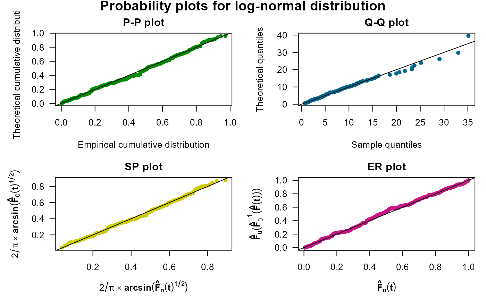
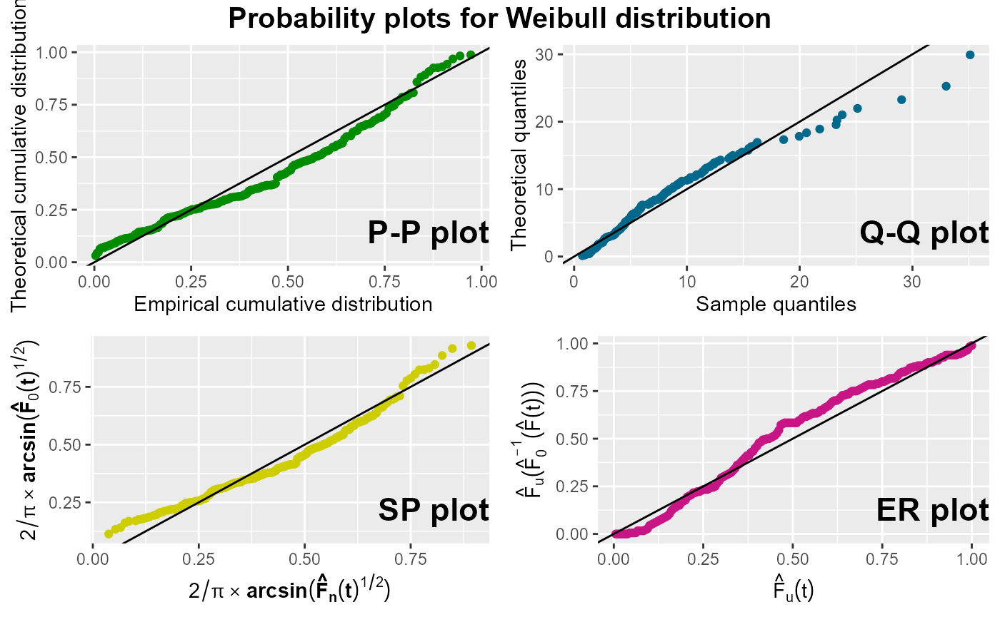
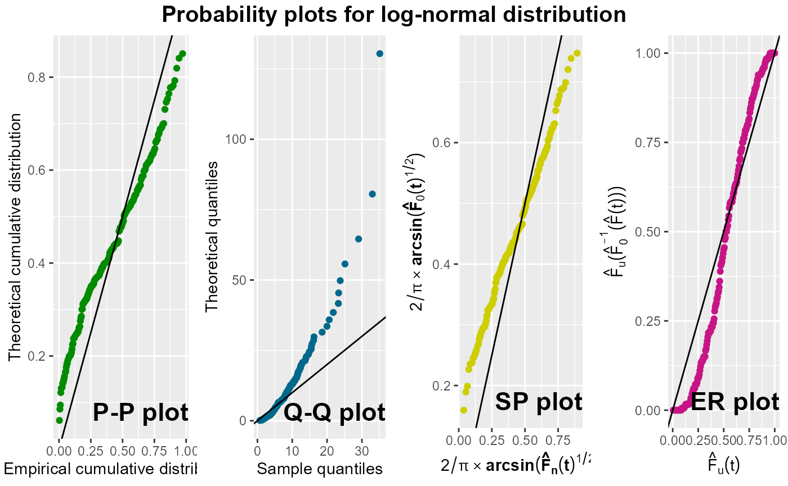
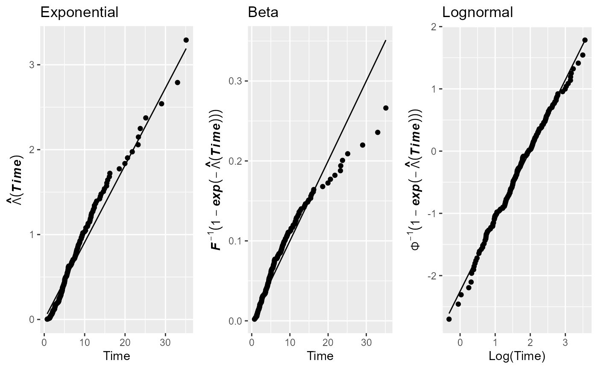
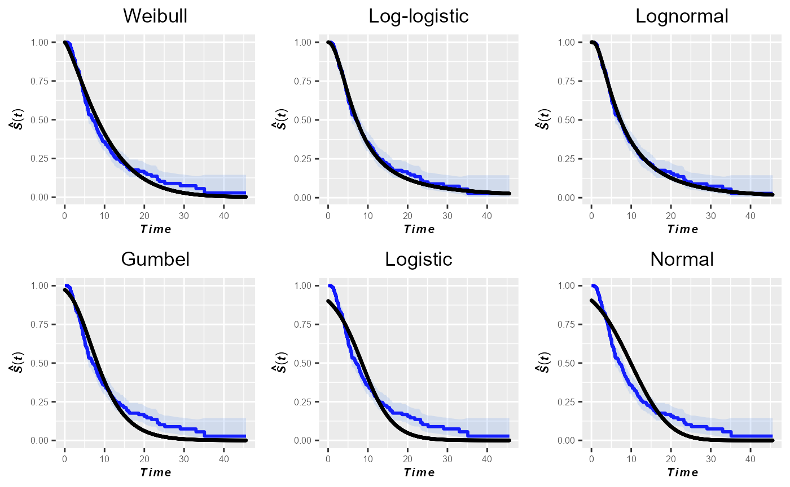
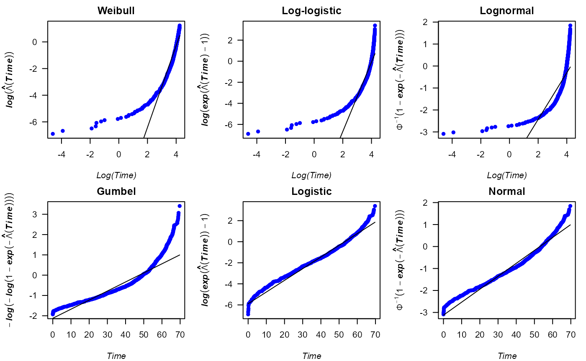
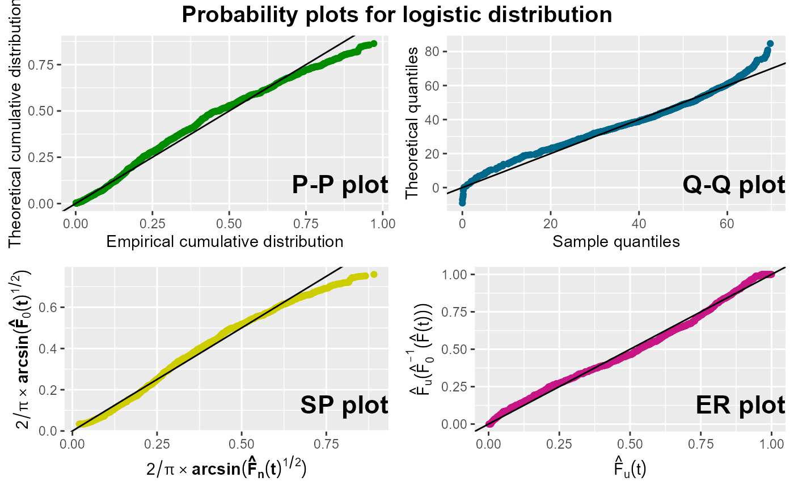
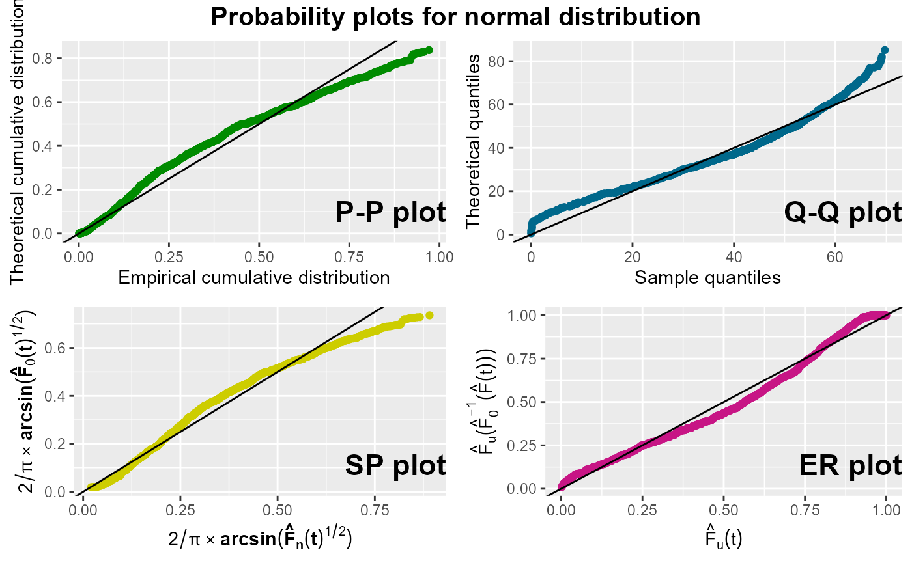

The GofCens package provides six different plots for evaluating goodness of fit, applicable to both complete and right-censored data. In most cases, a roughly straight line formed by the points suggests good agreement with the hypothesized theoretical distribution .
Following, represents the empirical distribution function in case the data are complete data and 1 minus the Kaplan-Meier estimator of the survival function if the data are subject to random right-censorship.
We will illustrate how the functions of the package works using the following simulated survival times. We generate survival times from a log-normal distribution with location parameter and scale parameter , i.e. , and censoring times from an exponential distribution with scale parameter , i.e. :
The observed right-censored survival times, , and the corresponding event indicators, , are created as follows:
times <- pmin(survt, censt)
delta <- as.numeric(survt <= censt)In total, () of the survival times of the generated sample are right-censored:
table(delta)
#> delta
#> 0 1
#> 106 194The probability-probability plot (P-P plot) maps against , where corresponds to with the unknown parameters replaced by their maximum likelihood estimates. In order to enhance the interpretability of the P-P plot and because some of the plotted points have a larger variability than others, Stabilised Probability plot (SP plot) are used. In the same way as the arcsin transformation can be used to stabilise the variance of a uniform order statistic, this function can be applied to stabilise the variance of . The variances of the resulting SP plotted points are all approximately equal.
The quantile-quantile plot (Q-Q plot) maps the theoretical quantiles against the estimated quantiles, that is, against . An empirical rescaling of the axes can help to overcome the problem that the plotted points might not be evenly spread, in particular in the presence of right-censored data. The Empirically Rescaled plot (ER plot) plots against , where the latter is the empirical cumulative distribution function of the points corresponding to the uncensored observations.
The four plots exposed above (P-P, Q-Q, SP and ER plot) can be done
by means of the probPlot() function. By default, the
function draws all four plots, but provides the user with the option to
choose only a subset of these, and by default
(prnt == TRUE), it returns the maximum likelihood estimates
of the parameters of the distribution under study, with the
corresponding standard errors, AIC and BIC. Notice that these estimates
are used to draw the plots if no specific distribution parameters are
provided. One graphical feature of the function is the option for the
user to choose between the base package graphics, which
is the default, and the ggplot2package for drawing the
plots. In the former case, probPlot() internally calls the
par() function, enabling the user to set graphical
parameters within the function call.
For the illustration of the probPlot() function, we
assess how well the log-normal distribution and the Weibull distribution
fit to the sample data. The first four plots show fairly straight lines,
thus confirming that the underlying distribution is the log-normal
distribution, whereas the other plots clearly show that the Weibull
distribution would not be an adequate distribution to model the
data.
probPlot(times, delta, distr = "lognormal", cex.lab = 1.3,
prnt = TRUE)
#> Distribution: log-normal
#>
#> Parameter estimates:
#> Location (se): 1.988 (0.058)
#> Scale (se): 0.883 (0.045)
#>
#> AIC: 1266.899
#> BIC: 1274.307
probPlot(times, delta, distr = "weibull", ggp = TRUE, prnt = TRUE)
#> Distribution: Weibull
#>
#> Parameter estimates:
#> Shape (se): 1.273 (0.067)
#> Scale (se): 10.98 (0.621)
#>
#> AIC: 1304.046
#> BIC: 1311.453
Note that since prnt is set to TRUE, the
maximum likelihood estimates under of both distributions parameters are
returned.
To illustrate additional functionalities of this function, we apply
it again on the data set to assess the suitability of fitting a
log-normal distribution with parameters
and
.
For this purpose, we employ the params0 argument, whose
default value is NULL, to specify the parameter values.
Additionally, the main argument is a Surv object and we
utilize the m argument to display the four probability plots in a single
row.
probPlot(Surv(times, delta) ~ 1, distr = "lognormal", m = matrix(1:4, nrow = 1),
params0 = list(location = 2, scale = 1.5), ggp = TRUE, prnt = TRUE)
#> Distribution: log-normal
#>
#> Parameters used in probability plots:
#> Location: 2
#> Scale: 1.5
#>
#> Parameter estimates:
#> Location (se): 1.988 (0.058)
#> Scale (se): 0.883 (0.045)
#>
#> AIC: 1266.899
#> BIC: 1274.307
From these plots, it becomes evident that this log-normal distribution does not fit well to the data. Moreover, in this illustration, the function provides both the parameter values used in the probability plots and the maximum likelihood estimates of the parameters with the corresponding standard errors, AIC and BIC.
Another set of plots consists of cumulative hazard plots, derived from transforming the cumulative hazard function in such a way that it becomes linear in or in . The Nelson-Aalen estimator of is computed from the data, and the distribution-specific transformation is then plotted against either or its natural logarithm.
The cumhazPlot() function can be used to draw cumulative
hazard plots for any of the distributions available in the
GofCens package. Given a set of survival times, this
function is a helpful tool to assess which parametric model fits best to
the given data.
By default, the function draws the cumulative hazard plots for the
Weibull, Gumbel, log-logistic, logistic, log-normal, and normal
distributions, but provides the user with the options to also choose the
exponential and beta distribution or a subset of all these. Like the
probPlot() function, the user can choose between the base
package graphics, which is the default value, and the ggplot2 package to
draw the plots, and by default, the maximum likelihood estimates of the
distribution under study are returned with the corresponding standard
errors, the AIC and the BIC.
An illustration with the previously generated right-censored sample from the log-normal distribution is shown. As expected, the points of the cumulative hazard plot for the log-normal distribution show a fairly straight line, whereas most of the other distributions under study can clearly be discarded. The corresponding code is the following. Different from the previous example, the function returns the parameter estimated for each of the six default distributions.
cumhazPlot(times, delta, font.lab = 4, cex.lab = 1.3)If the user wants to assess the goodness of fit of the exponential
and the beta distribution and compare these with the fit of the
log-normal distribution, she/he has to specifically choose these
distributions as it is done in the following example. Notice therein,
that the user has to provide the limits of the beta distribution,
because the default domain, the interval
,
does not cover the range of the sample’s survival times. Moreover, in
this example, the plots are drawn with the ggplot2
package (ggp = TRUE) and the parameter estimates will not
be returned on the screen (prnt = FALSE, the default). We
can see that neither the exponential nor the beta distribution fit well
to the data. The corresponding code is the following.
cumhazPlot(times, delta, distr = c("exponential", "beta", "lognormal"),
betaLimits = c(0, 100), ggp = TRUE, prnt = FALSE)
The GofCens package includes a function to
graphically compare the Kaplan-Meier estimate of the survival function
with the parametric estimations of the survival function from the
parametric models under study
.
This function is the kmplot().
For this purpose, each parametric estimation is individually added to
the Kaplan-Meier estimator of
.
Likewise the cumhazPlot() function, this is done by default
for the Weibull, Gumbel, log-logistic, logistic, log-normal, and normal
distributions. Additionally, users have the option to choose the
exponential and beta distributions. By default, the plots are generated
using the graphics package, but setting the argument
ggp = TRUE allows for the use of the
ggplot2 package. With both options, the pointwise
confidence intervals are plotted.
kmPlot(times, delta, ggp = TRUE)
As expected, the log-normal distribution exhibits the best fit to the data. Nevertheless, based on the plots in this figure one might also consider the log-logistic distribution as a parametric model that fits well to the sample data.
In this section, we apply the above functions of the GofCens package to determine which parametric model fits best to the survival times of former NBA players.
The data frame nba comes with the GofCens
package and contains the survival times (variable survtime)
of all
former players of the of the National Basketball Association (NBA) until
July 2019. Survival times are measured as the elapsed time (in years)
from the end of the NBA career until either death
(cens == 1) or July 31, 2019 (cens == 1). By
this date,
()
of the former players had died with uncensored post-NBA survival times
ranging from a few days until nearly 70 years.
In order to estimate the median and model the survival times
parametrically, we need to know which distribution is the most
appropriate distribution. For this purpose, we take advantage of the
cumhazPlot() function, which provides the following six
cumulative hazard plots:
data("nba")
cumhazPlot(Surv(survtime, cens) ~ 1, nba, font.lab = 4, cex.lab = 1.3,
lwd = 3, colour = "blue")
According to the cumulative hazard plots above, the logistic
distribution fits reasonably well to the data, even though the
corresponding plot does not show a completely straight line of the
points. In addition, we could also consider the normal distribution for
parametric analyses of the survival times. To choose one of either
distributions, we run the following code to draw probability and
quantile-quantile plots with the probPlot() function. In
addition, we estimate the parameter of the logistic distribution fitted
to the data.
probPlot(Surv(survtime, cens) ~ 1, nba, distr = "logistic", ggp = TRUE,
degs = 2, prnt = TRUE)
#> Distribution: logistic
#>
#> Parameter estimates:
#> Location (se): 53.08 (0.46)
#> Scale (se): 9.01 (0.22)
#>
#> AIC: 8460.3
#> BIC: 8472.87
probPlot(Surv(survtime, cens) ~ 1, nba, distr = "normal", ggp = TRUE)
According to the plots exposed above, the logistic distribution appears to be a slightly better choice than the normal distribution, as the points in all four plots for the normal distribution show some curvature.
Note that in the previous function calls, we used the
formula() versions of both functions, which allow for the
inclusion of the data frame nba in the argument list, which simplifies
their use.